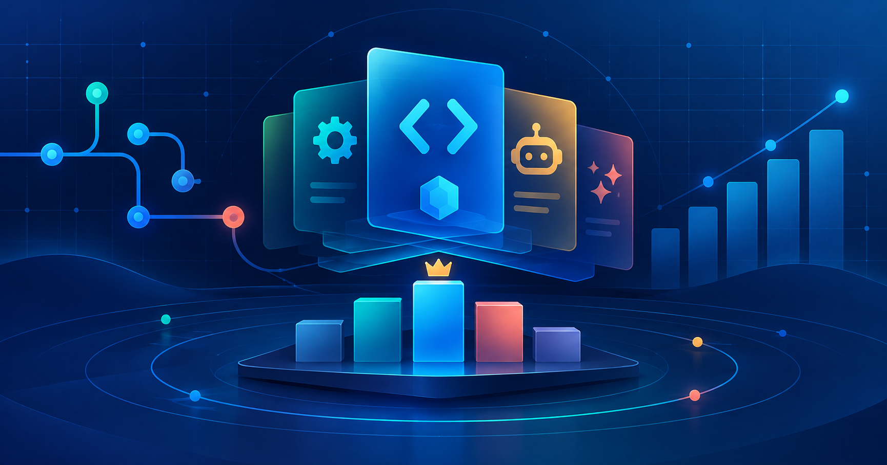

2026-10-10 · GitHub · Codex Skill
GitHub Codex Skill 熱門專案 TOP20
以 Anysearch 搜尋候選，再由 GitHub 官方 Repository API 驗證近七天仍有更新的技能、代理與 Codex 周邊專案。

前言與搜尋條件
- 資料時間：2026-10-10 11:06:38.449 UTC（Asia/Taipei 約 2026/10/10 19:06）；更新窗口為前 7 日。
- 先以 Anysearch 的
week條件搜尋 GitHub 上的 Codex Skill、OpenAI Codex Skill、Agent Skill、Codex agents、Codex plugin 與 Codex automation 候選；其 code 垂直端點回傳tool not found，故本次採一般搜尋結果作候選來源。 - 再以 GitHub 官方 Repository API 核實
stargazers_count、forks_count、language、pushed_at與description，篩除非 repository、推送時間不在窗口內或主題關聯不足者。 - 排序依 Stars 由高到低；Stars 為累積值，不代表本週新增數，亦不等於安全性或企業可用性評價。GitHub 的程式語言欄位依原始資料呈現，未將繁體中文當作篩選條件。
TOP20 排名表
| # | Repository | Stars | Forks | 主要語言 | 最近 Push (UTC) | Description |
|---|---|---|---|---|---|---|
| 1 | affaan-m/ECC | 276,207 | 41,207 | JavaScript | 2026-10-10T01:41:12Z | The agent harness performance optimization system. Skills, instincts, memory, security, and research-first development for Claude Code, Codex, Opencode, Cursor and beyond. |
| 2 | NousResearch/hermes-agent | 252,409 | 54,541 | Python | 2026-10-10T10:59:11Z | The agent that grows with you |
| 3 | farion1231/cc-switch | 142,276 | 9,495 | Rust | 2026-10-10T10:44:40Z | A cross-platform desktop All-in-One assistant for Claude Code, Codex, OpenCode, OpenClaw, Grok Build & Hermes Agent. Only official website: ccswitch.io |
| 4 | nextlevelbuilder/ui-ux-pro-max-skill | 134,362 | 14,274 | Python | 2026-10-09T05:06:45Z | An AI skill that provides design intelligence for building professional UI/UX across multiple platforms. |
| 5 | openai/codex | 128,492 | 20,166 | Rust | 2026-10-10T08:51:37Z | Lightweight coding agent that runs in your terminal |
| 6 | Graphify-Labs/graphify | 125,143 | 12,079 | Python | 2026-10-10T00:53:14Z | Turn any codebase, with its docs, SQL schemas, configs, and PDFs, into a queryable knowledge graph. A /graphify skill for Claude Code, Cursor, Codex, and Gemini CLI: local deterministic AST parsing, every edge explained, no vector store. |
| 7 | addyosmani/agent-skills | 104,306 | 10,886 | JavaScript | 2026-10-10T08:28:49Z | Production-grade engineering skills for AI coding agents. |
| 8 | nexu-io/open-design | 100,318 | 11,572 | TypeScript | 2026-10-10T11:02:54Z | 🎨 Best DeepSeek Harness Design Plugin. The open-source Claude Design alternative. 🖥️ Local-first desktop app. 🖼️ Your coding agent becomes the design engine: prototypes, landing pages, dashboards, slides, images & video — real files, HTML/PDF/PPTX/MP4 export. 🤖 Claude Code / Codex / Cursor / DeepSeek Harness / OpenCode & 20+ CLIs via BYOK. |
| 9 | thedotmack/claude-mem | 99,098 | 8,677 | TypeScript | 2026-10-09T10:23:45Z | Persistent Context Across Sessions for Every Agent – Captures everything your agent does during sessions, compresses it with AI, and injects relevant context back into future sessions. Works with Claude Code, OpenClaw, Codex, Gemini, Hermes, Copilot, OpenCode + More |
| 10 | Leonxlnx/taste-skill | 94,262 | 6,414 | JavaScript | 2026-10-09T21:58:20Z | Taste-Skill - gives your AI good taste. stops the AI from generating boring, generic slop |
| 11 | stablyai/orca | 88,918 | 5,685 | TypeScript | 2026-10-10T11:05:41Z | Orca is the ADE for working with a fleet of parallel agents. Run any coding agent with your own subscription. Available on desktop, mobile and remote runtime. |
| 12 | Egonex-AI/Understand-Anything | 85,805 | 7,223 | TypeScript | 2026-10-09T05:35:24Z | Graphs that teach > graphs that impress. Turn any code into an interactive knowledge graph you can explore, search, and ask questions about. Works with Claude Code, Codex, Cursor, Copilot, Gemini CLI, and more. |
| 13 | tt-a1i/archify | 81,493 | 5,503 | JavaScript | 2026-10-10T10:47:53Z | Turn any idea, plan, or codebase into a beautiful interactive diagram. An agent skill for Claude Code, Codex, and more. |
| 14 | diegosouzapw/OmniRoute | 74,815 | 10,802 | TypeScript | 2026-10-10T10:21:10Z | Never stop coding. Free MIT AI gateway: one endpoint, 359 providers (150+ free), 1200+ models Kimi, Claude, GPT, Gemini, GLM, DeepSeek, MiniMax. Works with Claude Code, Codex, Cursor, OpenCode, Cline & Copilot. Quota-aware auto-fallback, RTK+Caveman compression saves 15-95% tokens, MCP/A2A, Desktop/PWA. Built by hundreds of contributors |
| 15 | ruvnet/ruflo | 74,236 | 8,825 | TypeScript | 2026-10-10T08:05:32Z | 🌊 The original agent harness. Deploy intelligent multi-player swarms, coordinate autonomous workflows, and build conversational AI systems. Features adaptive memory, self-learning intelligence, federation, vector RAG integration, and native Claude Code / Codex / Hermes and many more Integrated |
| 16 | career-ops-hq/career-ops | 73,937 | 13,875 | JavaScript | 2026-10-10T07:15:21Z | Open-source AI job search agent and job finder: scan job boards, score each job 1-5 against your CV before you apply, tailor an ATS-friendly resume and cover letter, get interview prep and a job application tracker. It helps you fill in each application; you press Submit. Runs locally in your AI coding CLI (Claude Code, Codex, OpenCode and more). |
| 17 | colbymchenry/codegraph | 73,653 | 4,746 | C | 2026-10-10T09:04:35Z | Pre-indexed code knowledge graph, auto syncs on code changes, for Claude Code, Codex, Gemini, Cursor, OpenCode, AntiGravity, Kiro, CoPilot, and Hermes Agent — fewer tokens, fewer tool calls, 100% local |
| 18 | code-yeongyu/oh-my-openagent | 69,930 | 5,745 | TypeScript | 2026-10-10T11:03:13Z | OmO: Just type "mass ulw" keyword with your prompt. Now you are the master of graph engineering. |
| 19 | morluto/rea | 59,580 | 11,850 | TypeScript | 2026-10-10T11:04:49Z | Reverse engineer anything with agents, from app behavior down to native binaries. |
| 20 | Alishahryar1/free-claude-code | 57,204 | 9,135 | Python | 2026-10-10T09:42:30Z | Use Claude Code, Codex, VSCode, Pi, and OpenCode (and 6 other harnesses) for free (1.3B+ free tokens) from your terminal, app, IDE, or phone, and now from the browser with native browser sessions (multi-harness + multi-model) like OpenClaw (voice supported + ToS friendly) |
觀察重點
- 榜單前段以 agent harness、跨工具整合與技能集合為主；Codex 通常是多代理開發流程的一環，而非單獨產品功能。
- 本週候選的更新仍相當密集，多個專案在資料核實當日持續推送；部署前應鎖定 commit 或 release，而不是只依賴預設分支。
- 知識圖譜、長期記憶、設計產出與模型 gateway 都進入同一工具鏈，顯示 agent workflow 正從文字產出延伸到可交付工件。
MIS／技術人員注意項目
- 先在隔離測試環境檢查安裝腳本、外掛權限、資料上傳目的地與授權條款；Stars 無法替代供應鏈審查。
- 多模型 gateway 與自動 fallback 會改變憑證、費用、稽核與出站防火牆需求；企業環境應先建立核准清單與 proxy 記錄。
- 導入 Skills 或 Agents 時，應把
SKILL.md、scripts、依賴版本及變更流程納入版本控管，並為非互動式部署保留明確 log 與 rollback。
本週變化簡述
本次於同日早先版本後重新核實官方 metadata：20 個入榜 repository 名單維持不變，Stars、Forks 與最近 Push 時間已依本次資料時間更新；排行榜僅反映該時點的公開累積數值。
結語與資料時間提醒
本表是「近七日有更新、且與 Codex／Agent Skills 生態相關」的可驗證快照，不是安全審核或採購建議。GitHub 星數、fork 與描述會即時變動；導入前請再次核對官方 repository、授權、release、維護活躍度及組織資安規範。